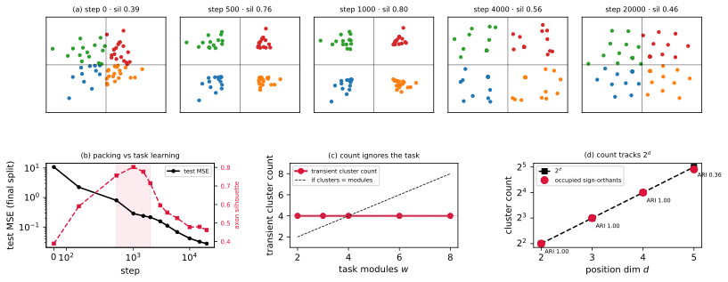
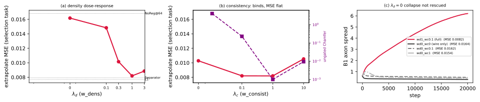

A forensic study of a proposed regularizer — one axon and \(M\) dendrite positions per neuron, weights priced by axon-to-nearest-dendrite distance — on the flat winning-ticket bench: what it does, which of its three terms do it, and why its geometry looks the way it does. The recurring character is a fact it shares with Separator’s codes and the symmetric WiringPrior: the learned geometry receives no gradient from task performance. Companion: The flat winning ticket under the microscope; executable figures:.
Setup
Task, model, training.
As in the companion report: flat_modular (4 disjoint
sinusoidal modules on \(z\in\mathbb{R}^8\) + 16 nuisance dims,
\(y\) standardized, \(n{=}2048\), train range \(r{=}0.7\)); MLP \(24\!\to\!64\!\to\!64\!\to\!1\), GELU, \(5{,}825\) parameters; AdamW (\(\eta{=}10^{-3}\), weight decay \(0.01\)), batch 200, 20k steps,
deterministic. Two benches, never mixed within a figure panel: the
final task (task_seed=4242, extrapolate split) for
headline numbers; the disjoint selection task
(task_seed=2026, extrapolate split — the HP bench) for the
ablation, attribution, and transfer experiments. Train seed 1, with
seeds 2–3 added for the headline.
Method.
Every neuron \(i\) owns one axon \(a_i\in\mathbb{R}^d\) (output port) and \(M\) dendrites \(D_i\in\mathbb{R}^{M\times d}\) (input ports); \(d{=}2\), \(M{=}5\). Inputs only send (no dendrites), the output only receives (no axon); hidden neurons own both. The directed edge \(j\!\to\!i\) costs the distance from \(j\)’s axon to \(i\)’s nearest dendrite, and the wiring penalty prices the actual weights by it: \[c(j\!\to\!i)=\min_{m\le M}\,\lVert a_j-D_{i,m}\rVert_2,\qquad \mathcal{R}_{\mathrm{wire}}=\frac1L\sum_{\ell}\operatorname*{mean}_{i,j}\,\bigl|W^{(\ell)}_{ij}\bigr|\;c(j\!\to\!i).\] One axon can serve any number of receivers (free fan-out); the \(\min\) over \(M\) dendrites means a receiver reads cheaply from at most \(M\) distinct axon clusters (bounded fan-in): the cost is deliberately not a metric. Two auxiliary priors act on the hidden boundaries — consistency (close axons must carry similar dendrite sets; \(\mathrm{Cham}\) = symmetrized directed Hausdorff) and density (Gaussian repulsion on axons; the anti-collapse term, since \(\mathcal{R}_{\mathrm{wire}}\) is a pure alignment objective whose global minimum includes all-positions-coincident): \[\begin{gathered} \mathcal{R}_{\mathrm{con}}=\operatorname*{mean}_{b\,\in\,\mathrm{hidden}}\ \operatorname*{mean}_{i\ne j}\, e^{-\lVert a_i-a_j\rVert/\gamma}\,\mathrm{Cham}(D_i,D_j),\qquad \mathcal{R}_{\mathrm{dens}}=\operatorname*{mean}_{b\,\in\,\mathrm{hidden}}\ \operatorname*{mean}_{i\ne j}\, e^{-\lVert a_i-a_j\rVert^2/2\sigma^2},\\[1pt] \mathrm{loss}=\mathrm{MSE}\bigl(f_W(x),\,y\bigr) + c\,\bigl[\,\mathcal{R}_{\mathrm{wire}}+\lambda_c\mathcal{R}_{\mathrm{con}}+\lambda_d\mathcal{R}_{\mathrm{dens}}\,\bigr], \qquad c=3{\times}10^{-2},\ \lambda_c=0.1,\ \lambda_d=1,\ \gamma=\sigma=1. \end{gathered}\] Positions are ordinary parameters in the same AdamW, initialized \(\mathcal{N}(0,0.5^2)\). At \(M{=}1\) the family degenerates to the symmetric single-position WiringPrior (verified to \(10^{-7}\)). The structural fact: predictions are \(f_W(x)\) — positions never enter the forward pass, so \(\partial\,\mathrm{MSE}/\partial(a,D)\equiv0\); the only forces on the geometry are \(c\,\nabla\mathcal{R}\) and the decay step. (Separator’s codes obey the same equation; §3 turns this into an experiment.)
HPs and budget.
The axdn op-point comes from a \({\sim}\)22-configuration local
search on the selection bench (spanning \(c\), \(M\), \(d\), pen, soft-min \(\tau\), \(\sigma\), \(\lambda_d\), \(\lambda_c\)); it keeps the proposal’s
default \(M{=}5\) (\(M{=}3\) and \(c{=}0.1\) scored within single-seed noise
of it: \(0.0074\)/\(0.0078\) vs. \(0.0082\)). The baselines carry their
winners from the larger production HP grid, so budgets are not
equal: the NoReg comparison is robust to this (NoReg has no regularizer
HPs and shares all training HPs), but the ranking against L1/Separator
is not an equal-budget claim.
It works — as a capacity governor, not a decomposer
Headline (final bench, Fig. 1a): axdn@64 reaches \(0.0276\) (seeds 2–3: \(0.033\), \(0.037\)) vs. NoReg@64 \(0.0417\) (\(0.039\), \(0.042\)) — the win holds at every seed (3/3 paired, mean gap \(0.009\)), though seed 1 flatters its size — and it beats the symmetric WiringPrior@64 (\(0.0416\)), which collapses to a point and becomes NoReg in every metric we measure (Table 1). Mid-pack overall: below L1 (\(0.0226\)) and Separator (\(0.0151\)), \({\approx}\) NoReg@16 (\(0.0285\)). Three mechanisms behind the number. (i) The geometry stays engaged — because the density term holds it open: \(B_1\) axon spread (mean \(\lVert a\rVert\)) grows \(0.6\!\to\!5.1\) and the mean edge cost \(0.46\!\to\!1.23\) (Fig. 1b; final axon-density kernel \(0.05\), collapse \(=1\)) — unlike Separator’s dissolving codes, this geometry is alive at 20k; remove the density term and the familiar failure returns (spread \(0.62\!\to\!0.30\), MSE at NoReg level, §4). (ii) Bounded fan-in is genuine and binding (Fig. 1d): receivers route \({\sim}30\) active in-edges through \(4.6\)/\(5.0\) distinct dendrites (\(B_1\)/\(B_2\)) — the constraint saturates at \(M\); the asymmetry also pays (\(M{=}1\), i.e. WiringPrior \(+\) density: \(0.0132\) vs. \(0.0082\) for \(M{=}5\), selection bench). (iii) The value is concentrated in the over-parameterized regime (Fig. 1c; HPs held at their width-64 values for all widths, so axdn’s off-64 points are un-tuned; NoReg has no method HPs): at widths 4–32 axdn tracks NoReg (\(0.197\) vs. \(0.192\) at width 4; \(0.031\) vs. \(0.029\) at 16), then separates exactly where NoReg’s U-curve degrades (\(0.0276\) vs. \(0.0417\) at 64, \(0.0557\) vs. \(0.0609\) at 128) — the companion’s capacity-governor profile, but milder at both ends: no damage at width 4 (Separator: \(0.62\)), less compression at 64 (participation ratio \(h_1\!\approx\!15\) vs. Separator’s \(6.4\); nuisance suppression \(2.2\) vs. \(3.9\), L1 \(\approx27\)).

What it does not do is decompose. Same subspace pipeline as the companion (causal input-block perturbations \(\to\) PCA \(\to\) patching): per-module dimensionality \(q^{90}{=}(10,9,9,10)\) and cross-module overlap \(0.278\) are indistinguishable from NoReg@64 (\((12,9,9,11)\), \(0.284\)), far from Separator’s compact \((3,4,3,3)\), \(0.026\); patching \(R^2\) \(0.56\) vs. NoReg’s \(0.54\). The axons are not the variables: same-module neurons do not share axon locations (within/between-module axon-distance ratio \(0.94\)–\(0.95\)). Functional additivity (Sobol \(\sum_k S_k=0.957\)) matches every well-fit model — task-forced, not method-specific. The proposal’s “axon \(=\) emitted variable” intuition fails for the same reason the companion’s codes read ARI \(\approx0\): the modules live in rotated subspaces, which no per-neuron point (or code) can express — and with no task gradient, the geometry has no channel through which the modules could reach it even in principle.
| model | test MSE | Sobol \(\sum_k S_k\) | \(q^{90}\) (\(S_1..S_4\)) | h1 overlap | sig/nuis \(|W_0|\) | |
|---|---|---|---|---|---|---|
| axon–dendrite @64 | \(0.0276\) | \(0.957\) | \(10,9,9,10\) | \(0.278\) | \(2.2\) | |
| WiringPrior @64 (M=1, collapsed) | \(0.0416\) | \(0.958\) | \(12,9,9,11\) | \(0.284\) | — | |
| NoReg @64 | \(0.0417\) | \(0.958\) | \(12,9,9,11\) | \(0.284\) | \(\approx2.5\) | |
| NoReg @16 | \(0.0285\) | \(0.965\) | \(1,2,2,2\) | \(0.043\) | — | |
| L1 @64 | \(0.0226\) | \(0.961\) | \(3,3,3,2\) | \(0.043\) | \(\approx27\) | |
| Separator @64 | \(0.0151\) | \(0.959\) | \(3,4,3,3\) | \(\mathbf{0.026}\) | \(3.9\) |
The transient packing — and what causes it
The observation (Fig. 2a): the winner’s axons start as a Gaussian blob, snap into four tight clusters by step \({\sim}1\)k, then blur away (silhouette \(0.80\!\to\!0.46\)). Four clusters, four task modules — module discovery? No, on three counts. Timing: the packing peaks while the task is still unlearned (test MSE \(0.29\) at step 1k vs. \(0.0276\) final, Fig. 2b), and each axon’s cluster identity is sign-locked by step 200. Content: at the peak, ARI between cluster membership and the neurons’ module assignment is \(-0.18\) (\(\approx\) chance); patching the clusters’ subspaces explains nothing (\(R^2{<}0\)). Causes: retrain with \(w\in\{2,3,4,6,8\}\) modules — the count stays exactly 4 (Fig. 2c); change the position dimension and it tracks \(2^d\): the clusters sit on the sign-orthants of position space, ARI \(=1.0\) for \(d{=}2,3,4\) (Fig. 2d; at \(d{=}5\) the 64 axons dilute over 32 orthants, ARI \(0.36\)). “Four clusters \(=\) four modules” was a coincidence between \(2^d\) at \(d{=}2\) and \(w{=}4\).

Attribution by replay. If the task doesn’t set the
geometry, what does? Because \(\partial\,\mathrm{MSE}/\partial(a,D)\equiv0\),
the geometry is a closed system given the weights: \((a,D)\leftarrow\mathrm{opt}(c\,\nabla\mathcal{R}(a,D;W(t)))\).
So we replay the recorded \(W(t)\)
through the real compute from the run’s own step-0
positions, toggling each term (wire \(\Leftrightarrow\) replayed vs. zeroed \(W\); \(\lambda_c,\lambda_d\)) and the optimizer.
The full replay reproduces the live run exactly — peak step 900
vs. 900, silhouette \(0.806\) vs. \(0.807\), final spread \(3.28\) vs. \(3.28\) — validating the approach and
proving the decoupling: nothing the task does reaches the geometry
except through \(W\). The matrix
(Fig. 3) then decomposes the phenomenon:
Density alone recreates the packing (peak sil \(0.81\), ARI \(1.0\)) — wire and consistency are unnecessary. AdamW is necessary: step-size-matched SGD on the same density objective spreads the axons but never quantizes them (sil \(0.43\), late ARI \(0.34\)); Adam’s per-coordinate \(\pm\eta\) steps turn any sustained outward force into motion along the \(2^d\) diagonal sign directions \((\pm1,\dots,\pm1)/\sqrt d\) — the corners of position space, one per sign-orthant. Without density nothing spreads: wire-only collapses into duplicate micro-clumps (spread \(0.36\); its silhouette \({\approx}1.0\) is the degenerate duplicate-point value), consistency-only yields faint fuzz (sil \(0.57\)) — and Adam erases the force’s magnitude: \(\lambda_c{=}0.1\) and \(\lambda_c{=}1.0\) produce identical trajectories (Fig. 3, right); the form of the force field matters, its strength almost does not. The dissolution is density’s own second act: with density alone the tight corners still blur (late sil \(0.40\)) as the uniformity drive fans points out within their quadrants (sign identity stays locked, ARI \(0.9\)–\(1.0\)); wire re-concentrates late (\(0.63\) vs. \(0.40\)); weight decay is a bystander. So the packing is created by density \(\times\) AdamW and dissolved by density itself — optimizer geometry end to end. Density emerges as the one term with a real job; the next two sections take that lead.

In vivo, density is also the only term that earns MSE
Selection bench, one knob at a time (Fig. 4). Density shows a clean dose-response: \(\lambda_d{=}0\to0.0162\)–\(0.0164\) (\(=\) NoReg@64’s \(0.0168\) — the regularizer switches off), \(0.1\to0.0148\), \(0.3\to0.0101\), \(1\to0.0082\), \(3\to0.0089\); final spread rises \(0.5\to8.3\) in lockstep. Consistency is the instructive null: geometrically it works perfectly — at \(\lambda_c{\ge}1\) the ungated dendrite-set Chamfer drops \(4.13\to0.00\), i.e. all 64 neurons carry identical dendrite sets, one shared 5-port bus — yet MSE (\(0.0103/0.0082/0.0082/0.0105\) across \(\lambda_c\in\{0,0.1,1,10\}\)) and effective fan-in (4–5) do not move beyond single-seed noise. A constraint can bind geometrically and still be functionally vacuous. Nor can it replace density: at \(\lambda_d{=}0\) the collapse proceeds for every \(\lambda_c\) (spread \(\le0.49\); Fig. 4c) — its gate \(e^{-\lVert\Delta a\rVert/\gamma}\) is weakly axon-repulsive, but §3 showed why that cannot help: under Adam only the form of the force matters, and the gate’s repulsion dies as soon as it opens.

The density term transfers to Separator
Density’s job is anti-collapse — and Separator’s codes collapse on
this very bench (the companion’s subject), under the same
no-task-gradient equation. So we port the term: Separator
now accepts the identical Gaussian kernel on its multihot \(\sigma\)-codes (w_dens, per
hidden boundary and channel), compared against stock dchn at \(\lambda_d\in\{0.3,1,3\}\) on the selection
bench (Fig. 5). It works: the collapse stops (mean
pairwise \(\sigma\)-distance \(0.94\!\to\!1.30\)–\(1.45\) vs. stock’s \(\to0.33\)) at zero or negative
task cost (\(0.0070\) at \(\lambda_d{=}0.3\) vs. stock \(0.0079\); \(0.0122\) at the overdosed \(\lambda_d{=}3\)). And the
corner-quantization of §3 reappears in code space — here a
corner is a vertex \(b\in\{0,1\}^8\) of the code hypercube,
every coordinate of \(\sigma\)
saturated to exactly \(0\) or \(1\) — and it is persistent: mean
\(\min(\sigma,1{-}\sigma)\to0.000\)
with only \({\sim}9\) distinct binary
codes across the 64 neurons, because saturation freezes the wire pull
(\(\partial\mathcal{R}_{\mathrm{wire}}/\partial
z\propto\sigma'(z)\to0\) at the corners) while position space
has no such freeze. Same force, same optimizer, different fixed-point
structure — set by the representation’s bounded vs. unbounded geometry,
and in neither case by the task.

Conclusion
A coherent proposal that does real work — a correct asymmetric generalization of WiringPrior with genuinely binding fan-in, whose density term solves the collapse by construction and even transfers to Separator — but as a mild capacity governor, not a decomposer: NoReg-like subspaces, axons that never encode the modules, and a cluster structure that is the optimizer’s \(2^d\) sign-orthants. The root cause is shared across the family (axdn/WiringPrior positions, Separator codes): the representation receives no gradient from task performance (\(\partial\,\mathrm{MSE}/\partial\pi\equiv0\)), so its organization can only ever be the fixed-point geometry of regularizer force \(\times\) optimizer — sign-orthants in \(\mathbb{R}^d\), hypercube corners in \([0,1]^K\) — with the task reaching \(\pi\) only through the slow shadow of \(W\). Such a \(\pi\) can price \(W\) (the MSE gains) but cannot discover structure; a geometry meant to express the task must sit in the gradient path — positions in the forward pass (cf. NeuroPos, where \(w_{ij}=1/\lVert p_i-p_j\rVert\) is the weight) or codes that gate activations rather than price weights.